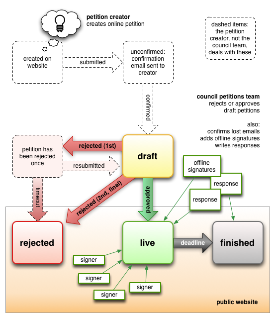

Overview: draft → live → finished (or draft → rejected)
A petition won’t appear in the admin interface until it has been confirmed — that is, the petition creator has submitted the petition, received an automatic email containing a unique link, and clicked on that link. This is shown as a draft petition.
Draft petitions can either be rejected or approved. If you reject a draft petition, it will be listed as rejected in the admin interface, but will not appear as a rejected petition on the live site because the petition creator still has a chance to revise it. When the petition creator revises and resubmits it, it will reappear as draft in the admin interface; if you reject it again, it will be marked as rejected and immediately appear as such on the live site. Otherwise, if its creator does not resubmit it, the petition will eventually appear as rejected (the timeout period varies from council to council).
If you approve a draft petition, it becomes live, and members of the public can sign it on your website.
When the petition’s deadline is reached, its status changes to finished, and signatures are no longer accepted. You can easily change the deadline before this occurs.
You can post responses to the petition at any time, whether it is live or finished.
In general, before petitions appear as draft petitions, you won’t see them — effectively, until they have been submitted and confirmed, you can’t act on them anyway. The one common exception to this is if a petition creator contacts you because they never received the email containing the confirmation link. In this case you can search across all petitions, including unconfirmed ones.